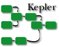
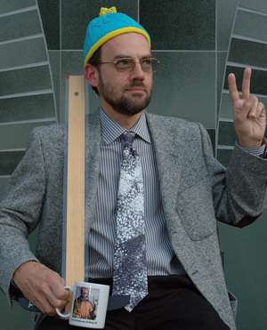
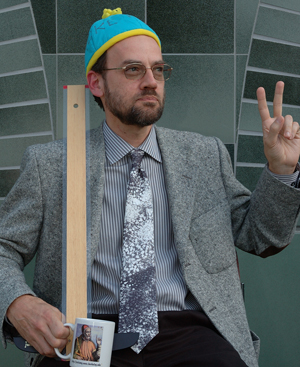

Sixth Biennial Ptolemy Miniconference
Featuring the Kepler Project
Thursday, May 12, 2005 - Berkeley, California




The Sixth Biennial Ptolemy Miniconference was held on Thursday May 12, 2005 at the Soda Hall HP Auditorium on the University of California campus, Berkeley, California. The Ptolemy project studies modeling, simulation, and design of concurrent, real-time, embedded systems. The focus is on assembly of concurrent components.
The Ptolemy Miniconference is an opportunity for research collaborators and Ptolemy users and extenders from industry, academia, and government to get together, present their work to the Ptolemy community, and hear about related research and results. It is typically held every two years.
This year, we invited the Kepler community to jointly organize the conference, under the leadership of Bertram Ludaescher, and to give presentations and posters. Kepler is a cross-project collaboration to develop open source tools for Scientific Workflows and is currently based on the Ptolemy II system for heterogeneous concurrent modeling and design. We also invited David Bacon from IBM to give an invited talk on real-time Java. David is one of the world's top experts in this area.